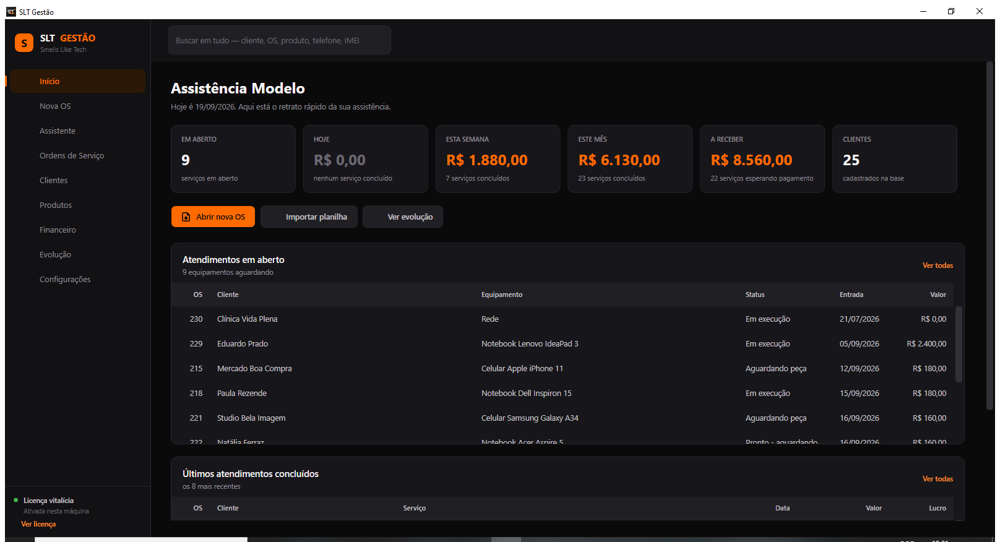
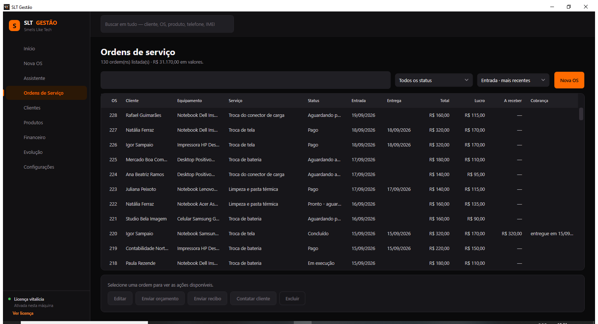
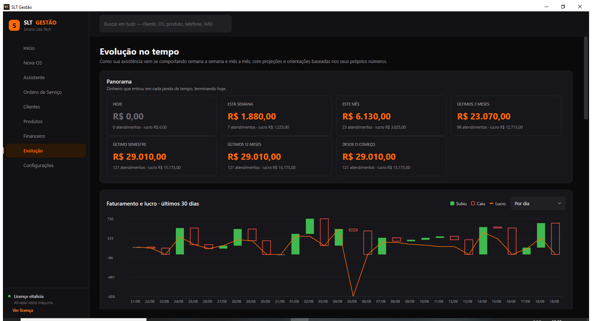
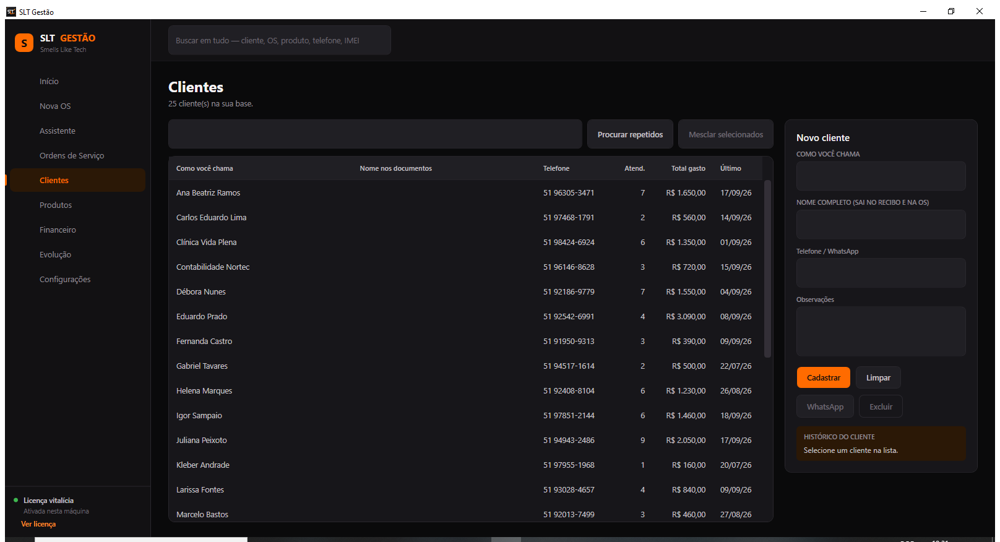
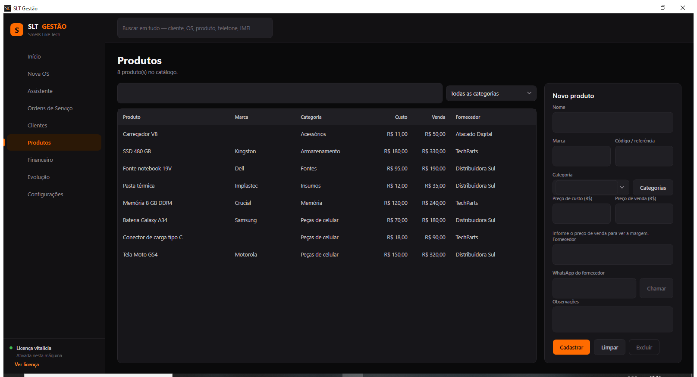
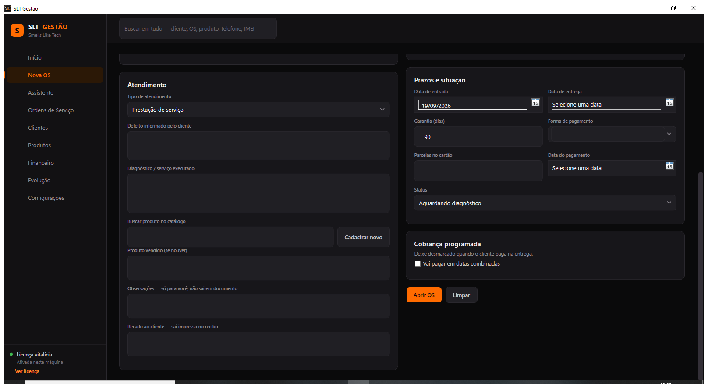

Ordem de serviço, cliente, produto e dinheiro no mesmo lugar. Funciona sem internet, acompanha você no celular e entende o que você dita — inclusive o áudio que o cliente manda no WhatsApp.
Nasceu de uma planilha que não dava mais conta. Hoje roda todo dia numa assistência de verdade, em Porto Alegre.
As telas abaixo são do programa rodando. Os nomes e valores são inventados — nenhum dado de cliente real aparece aqui.
Quanto entrou hoje, na semana e no mês. Quantos aparelhos estão na bancada. Quanto há para receber. Cada número leva à lista que o formou — clicar em "esta semana" abre exatamente as ordens daquela semana.

Filtro por situação, ordenação por data, entrega, valor ou por quanto falta receber. Orçamento e recibo saem em PDF com o seu logotipo, e o cliente recebe pelo WhatsApp sem você sair do programa.

O mesmo dinheiro visto em sete distâncias — hoje, semana, mês, trimestre, semestre, ano e desde o começo. O gráfico é de velas: verde quando o período faturou mais que o anterior, vermelho quando faturou menos. A linha laranja é o lucro.

Quantas vezes cada um voltou, quanto já gastou, quando foi a última vez. Telefone repetido vira aviso de cadastro duplicado, e os dois podem ser unidos sem perder histórico.

Preço de custo, preço de venda e fornecedor. Na hora de montar a OS, a peça entra pelo catálogo e o lucro do atendimento aparece antes de você fechar o orçamento.

Parcelamento e cobrança que se repete, no ritmo que você combinou: toda semana, a cada duas, ou todo mês. Cada parcela tem data e um botão de "recebi" — e o "a receber" passa a mostrar só o que falta entrar, com o vencimento mais próximo na frente.

Três decisões que mudam o dia de quem atende balcão.
O programa guarda tudo no seu computador e funciona sem internet. A nuvem é opcional e serve para levar os mesmos dados ao celular — não para prender você a uma mensalidade.
"Cria uma OS para o João, Moto G54, troca de tela, valor 320, pago no Pix" abre a ordem completa. A transcrição roda no próprio aparelho: o áudio do seu cliente não é enviado para servidor nenhum.
Antes de salvar, a tela mostra campo a campo o que entendeu. Quando há dois clientes com o mesmo nome, ele pergunta em vez de escolher — nome errado no recibo é problema seu, não do programa.
Aplicativo Android com as mesmas ordens, clientes e produtos. Dá para dar baixa numa parcela na porta da oficina e receber, pelo menu Compartilhar do WhatsApp, o áudio ou a foto que o cliente mandou.
Exportação completa em um arquivo, restauração em dois cliques. Sem depender de ninguém para recuperar o seu histórico.
Começa com o histórico que você já tem. A planilha continua funcionando enquanto você ganha confiança no sistema.
Uma licença por computador. Sem cobrança por ordem, por cliente ou por usuário — e o aplicativo do celular vem junto, sem custo à parte.
Não. O programa é instalado no computador e funciona offline. A internet só é necessária se você quiser usar o celular com os mesmos dados.
O backup leva clientes, ordens, produtos e gastos. A licença é por máquina — fale comigo e a gente resolve a transferência.
Celular, notebook, desktop, impressora, CFTV. Os tipos de equipamento e as categorias de peça são livres — você cadastra os seus.
Dá. Chame no WhatsApp que eu mostro o sistema rodando e tiro suas dúvidas.